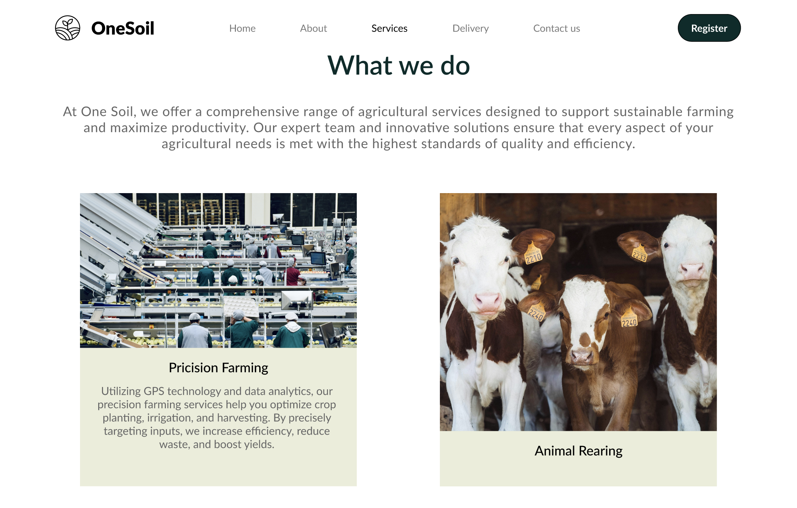
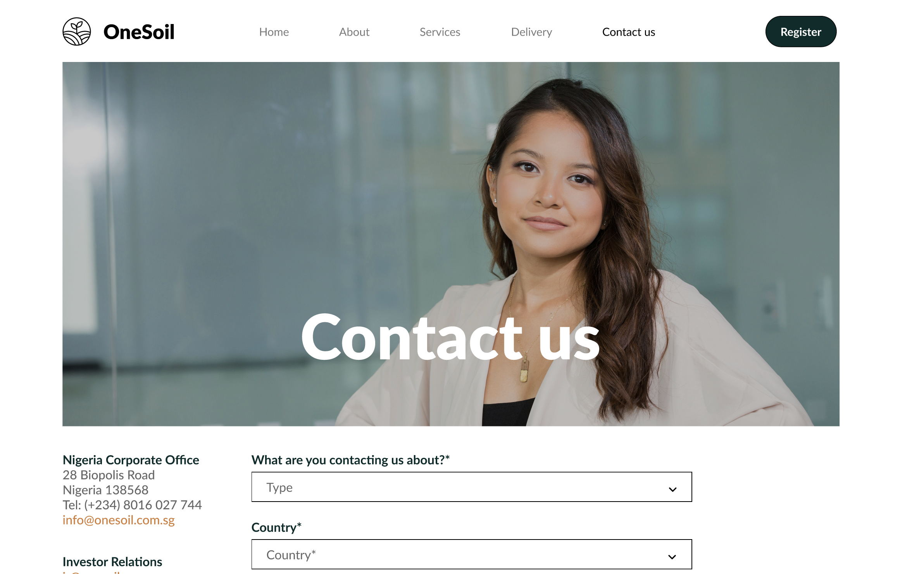

Onesoil
OVERVIEW:
Project Name: OneSoil Website
Client: Personal Project
Date: July 2024
Role: Lead UI/UX Designer
.
OneSoil is a fictional agricultural firm dedicated to sustainable farming practices and the production of high-quality crops and vegetables. The objective of this project was to design a website that effectively showcases OneSoil's services, products, and commitment to sustainability, while providing an excellent user experience.
 PROCESS:
PROCESS:User Research: I Conducted surveys and interviews with potential users, including farmers and consumers, to understand their needs and preferences for an agricultural firm's website. Competitive Analysis: I studied websites of other agricultural firms to identify best practices and areas for improvement.
 Concept Development: I developed ideas for the website’s layout, features, and visual style based on research insights.
Concept Development: I developed ideas for the website’s layout, features, and visual style based on research insights.Wireframes: I created low-fidelity wireframes to map out the site’s structure, navigation, and key content areas. DESIGN:
High-Fidelity Mockups: I developed high-fidelity mockups using Figma, ensuring a clean and professional design that aligns with OneSoil's brand identity. Visual Design: I focused on creating a visually appealing design with a cohesive color scheme, typography, and imagery that reflects OneSoil's values and mission.
Design Iterations: I conducted usability tests and gathered feedback to refine the design, ensuring it met user needs and expectations.  DEVELOPMENT:
Prototyping: I created interactive prototypes to demonstrate the website’s functionality and gather additional user feedback.
Implementation: Ensured that the design was feasible and user-friendly, focusing on performance and accessibility. Final Product: The OneSoil website features a user-friendly interface with intuitive navigation, detailed information about services and products, and engaging visuals that highlight the firm's commitment to sustainability. User Testing: I got positive feedback from users, who appreciated the site’s clarity, ease of use, and appealing design.
Impact: Hypothetically increased user engagement and interest in OneSoil's products and services, enhancing the firm's online presence. 